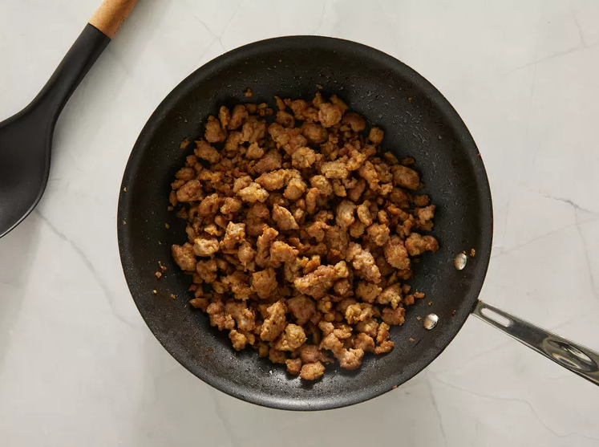
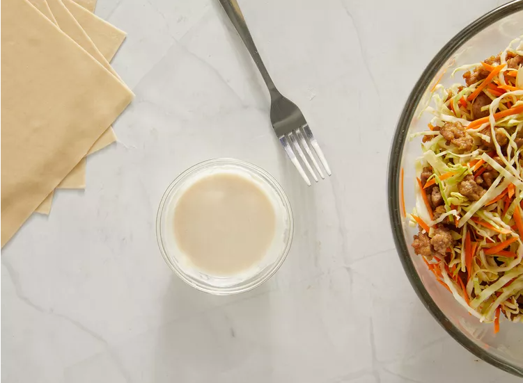
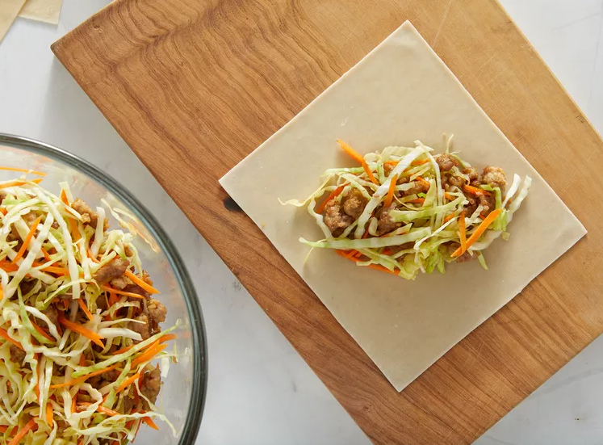
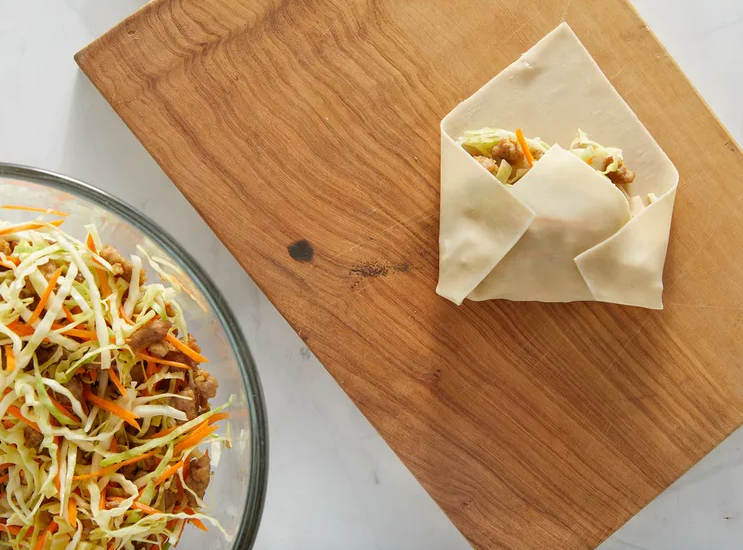
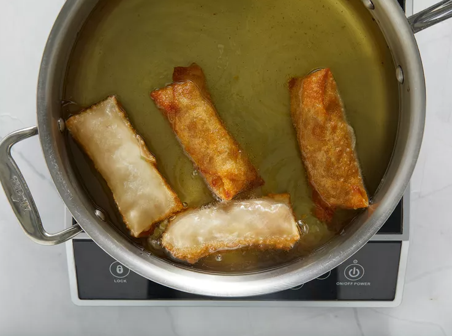

Season pork with ginger and garlic powder in a large bowl; mix until thoroughly combined. Place pork in a medium skillet over medium heat. Cook and stir until pork is browned and crumbly, 5 to 7 minutes.
Combine cooked pork, cabbage, and carrots in a large bowl; mix until egg roll filling is well combined. Mix four and water together in a small bowl until a paste forms.
Heat oil in a large skillet to about 375 degrees F (190 degrees C) or medium high heat. While oil is heating, prepare egg rolls: Lay one egg roll wrapper on a work surface with one corner pointed toward you like a diamond. Place about 1/4 to 1/3 cup of the filling in the center of the wrapper.
Fold the bottom corner up and over the filling. Fold the left and right corners in toward the center. Push the egg roll away from you and roll toward the top corner.
Brush a bit of the flour paste over the inside of that corner to help seal the egg roll. Fry egg rolls in the hot oil, turning occasionally, until golden brown and crispy, 5 to 8 minutes.
Place egg rolls on a serving plate and sprinkle sesame seeds over top. Remove from oil and drain on paper towels or rack.